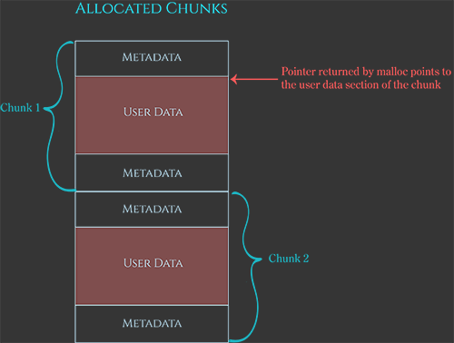
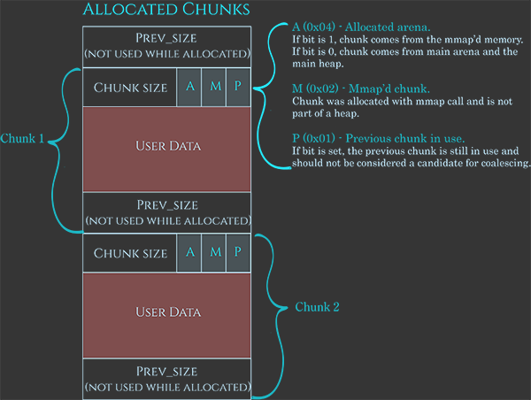
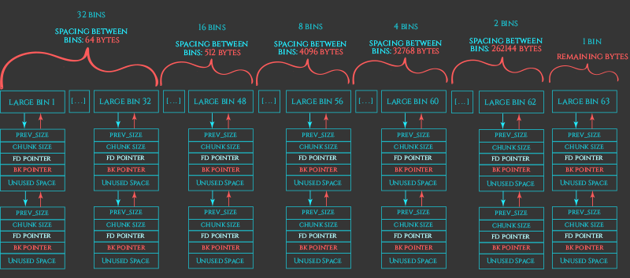

glibc heap allocator
有各种各样的堆管理器的实现。不同的实现我们的利用方式也会有细微的差别。以gblic为例，我们对堆的设计进行探索。
首先明确一点，当我们使用malloc(size)请求一块内存的时候，并不是随便找一个size大小的内存然后返回。首先size是需要对齐的，然后还需要分配额外的空间存储metadata。实际分配到的内存块称为Chunk，大小略大于size。如下图所示。

Malloc
所以Chunk是如何被分配的呢？一个简化的模型：
The simplified chunk-allocation strategy for small chunks is this:
- If there is a previously-freed chunk of memory, and that chunk is big enough to service the request, the heap manager will use that freed chunk for the new allocation.
- Otherwise, if there is available space at the top of the heap, the heap manager will allocate a new chunk out of that available space and use that.
- Otherwise, the heap manager will ask the kernel to add new memory to the end of the heap, and then allocates a new chunk from this newly allocated space.
- If all these strategies fail, the allocation can’t be serviced, and malloc returns NULL.
所以我们认为我们的malloc时，可用内存有好几种：一种是回收的内存，一种是堆顶内存，一种是其他内存。
申请新Chunk的时候，遍历链表看有没有足够大的链表可供分配。那么没有找到可用的回收Chunk，可以在堆顶分配出内存创建新的Chunk，再不够就向操作系统申请内存来扩大堆，就是我们熟悉的brk系统调用。brk调用失败后再求助mmap，Once the heap reaches this point, the heap manager will resort to attaching new non-contiguous memory to the initial program heap using calls to mmap。（这里我不是很懂，mmap可以申请一块匿名的内存区域，但是当heap已经触碰到了比如其他library的区域的时候，怎么办呢？）
Chunk
再来看Chunk的结构，以glibc为例，每个Chunk可以视作下面的数据结构。

可以看到，除了User Data，前面还存放了Chunk Size和一些Flag：
-
Chunk Size，在64位机器中是16bytes对齐的(在32位机器中是8bytes对齐的)，所以最低的4(3)位是0，我们可以用它来存放Flag。
-
A(0x04)：告诉我们这个Chunk是否属于Secondary Arena。
当程序是单线程的时候，只有Main Arena。但是多线程的时候为了避免全局的锁提高效率，会分配其他线程一个Secondary Arena，Secondary Arena不在程序的堆区，而是使用mmap分配内存。他模拟堆的增长也很有意思，先用mmap分配一块内存(subheap)标记为
PROT_NONE，然后需要用的时候用mprotect标记成PROT_READ|PROT_WRITE，直到subheap用完了再用mmap请求新的subheap。 -
M(0x02)：告诉我们Chunk是通过
mmap分配的，不在Heap区中。这意味着free的时候，直接通过munmap进行free，将整块内存还给操作系统。当请求分配的内存过大的时候，堆管理器会直接使用
mmap请求一块内存区域，然后free的时候直接通过munmap释放。 -
P(0x01)：告诉我们前一个Chunk是否是Free的，因为如果前一个Chunk是free的话，就可以在free的时候直接将这一个Chunk和前一个Chunk合并
Free
我们知道free是用来释放我们用malloc申请来的内存的。根据标准的规定，free(NULL)应该什么都不做。否则应该释放指针指向的对应的Chunk。
显然，指针本身不包含内存的大小信息，大小信息是存储在指针指向的内存之前的metadata的。free操作必然离不开metadata。所以只有正确的metadata（即从malloc申请而来，而且没有被free过）才能让free正常的工作，不然就会出现undefined behaviour。轻则程序崩溃，重则漏洞利用。
Free chunks也存储metadata，布局和分配的Chunk是一样的，Chunk Size+A+P，不过是不可能有M的。因为之前也介绍过了，M表示是从mmap直接申请来的，释放直接通过munmap还给操作系统。除此以外，在数据的最后还存着Previous Size，这有什么用呢？这意味着我们有一个free的指针，我们不仅可以根据Chunk Size计算出下一个Chunk地址，还可以根据Previous Size计算出上一个Chunk地址。

看一些Free的基本策略
- If the chunk has the M bit set in the metadata, the allocation was allocated off-heap and should be munmaped.
- Otherwise, if the chunk before this one is free, the chunk is merged backwards to create a bigger free chunk.
- Similarly, if the chunk after this one is free, the chunk is merged forwards to create a bigger free chunk.
- If this potentially-larger chunk borders the “top” of the heap, the whole chunk is absorbed into the end of the heap, rather than stored in a “bin”.
- Otherwise, the chunk is marked as free and placed in an appropriate bin.
用mmap分配的Chunk用munmap回收，否则Chunk一定来自于堆区。如果和Chunk相邻的Chunk正好也是Free的，那么可以合并这两个Chunk再回收。回收的时候，如果说正好在堆的顶部，那么就直接还给堆区，否则要回收到对应的“垃圾桶”(bin)。
Bin
bin在这里可以做回收站理解。回收的东西是Chunk。glibc中的bin一共有5种：
- 62 small bins
- 63 large bins
- 1 unsorted bin
- 10 fast bins
- 64 tcache bins
他们反应了堆设计的思想：
-
small bins是Chunk Size从16 bytes到504 bytes的，正好每8个bytes一个bin。bin的Size的意思是说bin可以装什么Size的Chunk。
-
large bins不再是一个bin对应一个Chunk，而是一个bin对应一个范围内的Chunk，也是为此large bin在插入的时候需要排序，比较慢。

-
Unsorted bins里面的Chunk没有固定的大小。他的设计是基于这样一个理念：如果我刚回收了Size=X的Chunk，很可能我不久之后就要用Size=X的Chunk。所以我可以先把free的Chunk放进Unsorted bin，而不去做是否可以合并Chunk的检查。不过因为里面的Chunk没有固定大小，所以查找的话需要整个遍历。
-
fast bins基于这样一个观察，就是Size比较小的使用的非常频繁。所以我们有Size为16,24一直到88 bytes的fast bin。他和small bins的区别在于fast bin并不尝试进行merge。他和small bins有size重叠的部分，显然，fast bins是优先的。
-
tcache bins是为多线程服务的，不看了。
Altogether
We now know enough to fully understand the entire behavior of malloc and free in the glibc heap implementation, and why each part of the algorithm exists. Let’s recap.
First, every allocation exists as a memory chunk which is aligned and contains metadata as well as the region the programmer wants. When a programmer requests memory from the heap, the heap manager first works out what chunk size the allocation request corresponds to, and then searches for the memory in the following order:
If the size corresponds with a tcache bin and there is a tcache chunk available, return that immediately.
If the request is enormous allocate a chunk off-heap via mmap.
Otherwise we obtain the arena heap lock and then perform the following strategies, in order:
Try the fastbin/smallbin recycling strategy
- If a corresponding fast bin exists, try and find a chunk from there (and also opportunistically prefill the tcache with entries from the fast bin).
- Otherwise, if a corresponding small bin exists, allocate from there (opportunistically prefilling the tcache as we go).
Resolve all the deferred frees
- Otherwise “truly free” the entries in the fast-bins and move their consolidated chunks to the unsorted bin.
- Go through each entry in the unsorted bin. If it is suitable, stop. Otherwise, put the unsorted entry on its corresponding small/large bin as we go (possibly promoting small entries to the tcache as we go).
Default back to the basic recycling strategy
- If the chunk size corresponds with a large bin, search the corresponding large bin now.
Create a new chunk from scratch
Otherwise, there are no chunks available, so try and get a chunk from the top of the heap.
If the top of the heap is not big enough, extend it using sbrk.
If the top of the heap can’t be extended because we ran into something else in the address space, create a discontinuous extension using mmap and allocate from there
If all else fails, return NULL.
And the corresponding free strategy:
- If the pointer is NULL, the C standard defines the behavior as “do nothing”.
- Otherwise, convert the pointer back to a chunk by subtracting the size of the chunk metadata.
- Perform a few sanity checks on the chunk, and abort if the sanity checks fail.
- If the chunk fits into a tcache bin, store it there.
- If the chunk has the M bit set, give it back to the operating system via munmap.
- Otherwise we obtain the arena heap lock and then:
- If the chunk fits into a fastbin, put it on the corresponding fastbin, and we’re done.
- If the chunk is > 64KB, consolidate the fastbins immediately and put the resulting merged chunks on the unsorted bin.
- Merge the chunk backwards and forwards with neighboring freed chunks in the small, large, and unsorted bins.
- If the resulting chunk lies at the top of the heap, merge it into the top of the heap rather than storing it in a bin.
- Otherwise store it in the unsorted bin. (Malloc will later do the work to put entries from the unsorted bin into the small or large bins).
堆使用的一些原则：
- Do not read or write to a pointer retuened by
mallocafter that pointer has been passed back to free, or it can lead use after free vylnerabilities. - Do not use or leak uninitialized inforamtion in a heap allocation, or it can lead to information leaks or uninitialized data vulnerabilities.
- Do not read or write bytes after the end of an allocation, or it can lead to heap overflow and read beyond bounds vulnerabilities.
- Do not pass a pointer that originated from malloc to free more than once, or it can lead to double free vulnerabilities.
- Do not pass a pointer that did not originate from malloc to free, or it can lead to invalid free vulnerabilities.
- Do not use a pointer returned by malloc before checking if the function returned NULL, or it can lead to null-dereference bugs and occasionally arbitrary write vulnerabilities.
图源及参考资料：
https://azeria-labs.com/heap-exploitation-part-1-understanding-the-glibc-heap-implementation/
https://azeria-labs.com/heap-exploitation-part-2-glibc-heap-free-bins/